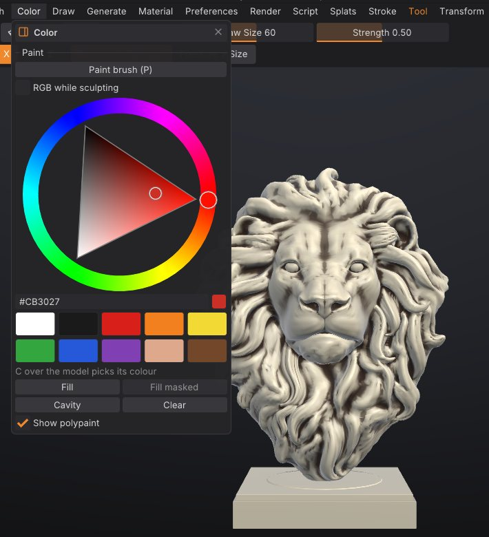
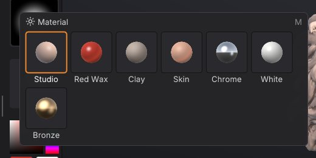

Polypaint and materials
Polypaint stores a colour on every vertex of the mesh, so you can paint a sculpt without UVs or textures, as in ZBrush. This chapter covers the Paint brush, painting while you sculpt, fills and cavity paint, picking colours, and the MatCap materials that change how the model is shaded in the viewport.
How polypaint works#
- Colour is stored per vertex. The detail you can paint is limited by how dense the mesh is: on a light mesh, colour edges look soft. Subdivide or remesh at a higher resolution before fine painting.
- Painting respects the mask (masked areas keep their colour) and skips hidden faces.
- Symmetry works for painting as it does for sculpting.
-
Polypaint is per SubTool and is saved in projects. It is exported as vertex colours to PLY, glTF/GLB, OBJ, USD (
displayColor) and GoZ. FBX export doesn't include it. - A mesh starts without polypaint. The first paint stroke or fill adds it (white everywhere you haven't painted).
Paint with the Paint brush#
- Press P, click Paint on the top shelf, or pick Paint on the bottom shelf.
- Choose a colour (see below).
- Stroke over the model. Draw Size, Strength, the stroke type and the alpha work as they do for sculpting.
While the Paint brush is active:
- Alt paints back towards white.
- Shift still smooths the shape, as in ZBrush.
- The surface isn't changed.
Press P again, or click Sculpt on the top shelf, to go back to sculpting.


Paint while sculpting#
Turn on Rgb on the top shelf (or RGB while sculpting in the Color palette). Every sculpt brush then also paints the current colour along its stroke. The Smooth brush and Shift-smoothing never paint.
Choose a colour#
- The left shelf has a colour picker (a square plus a hue strip), two swatches and a Fill button. Clicking the second swatch swaps it with the main colour, like ZBrush's Alternate.
- The Color palette has a larger hue wheel with a hex value, ten preset swatches (white, near black, red, orange, yellow, green, blue, purple, skin and brown) and the fill buttons.
- Press C with the cursor over the model to pick the colour under it (the mesh needs polypaint for this).
Fill, cavity paint and clear#
The Color palette has four buttons:
| Button | What it does |
|---|---|
| Fill | Fills the unmasked area with the colour (the whole mesh when nothing is masked). Same as Fill on the left shelf |
| Fill masked | Fills only the masked area. Available when the mesh has a mask |
| Cavity | Darkens the creases and cavities with a dark brown, respecting the mask. A quick way to bring out detail |
| Clear | Removes all polypaint from the active SubTool |
All of them are undoable. Show polypaint in the same palette (or Paint on the right shelf) turns the colours off in the viewport without deleting them.
Materials (MatCaps)#
Materials change only how the model is shaded in the viewport. They aren't exported and don't change polypaint.
| Material | Look |
|---|---|
| Studio | The default clay shading with soft studio lighting. Its colour is Base colour in the Material palette |
| Red Wax | Glossy deep red wax, the classic sculpting look |
| Clay | Matte grey-brown clay |
| Skin | Warm, soft skin tones |
| Chrome | Mirror-like metal, good for checking surface flow |
| White | Neutral off-white for judging forms |
| Bronze | Polished bronze |
To choose one:
- Press M for the material picker under the cursor, or click the Material tile on the left shelf. Point at a material to preview it on the model, click to keep it. Esc or clicking away puts the previous material back.
- Open the Material palette, or the Material tab of the LightBox.


Polypaint multiplies the material, and cavity shading stays on with every material. The material is saved with the project.
Scripting#
| Command | What it does |
|---|---|
set_color color=#c08060 | Set the paint colour: rrggbb, #rrggbb (quote it in scripts), r,g,b or a name such as white, skin, bone |
paint_fill area=unmasked | Fill; area is unmasked (default), masked or all; strength 0-1 |
paint_from_cavity color=#202020 strength=0.7 smoothing=2 | Cavity paint (defaults: dark brown, 0.7, 2 blur passes) |
paint_clear | Remove all polypaint |
set_material name=Chrome | Viewport material: studio or a MatCap name (desktop app only) |
set_color color="#d9b38c"; paint_fill; paint_from_cavity strength=0.5See also#
- Masking: protect areas from painting
- Sculpting and brushes: Draw Size, Strength, strokes and alphas also apply to painting
- Exporting: which formats carry vertex colours